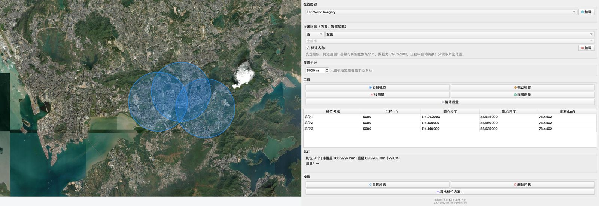
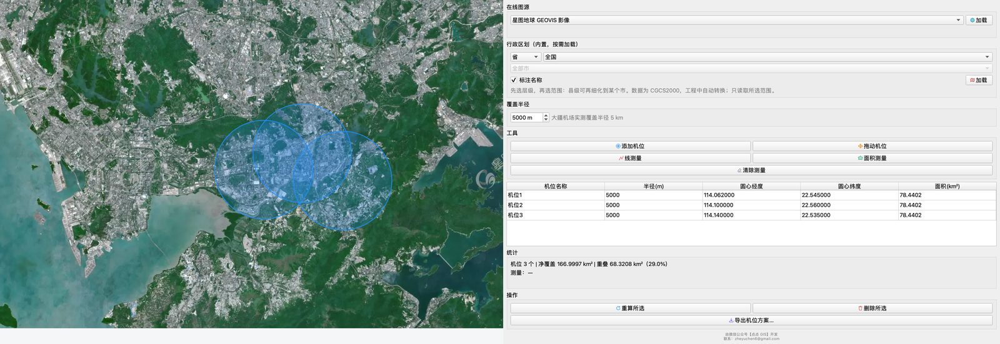
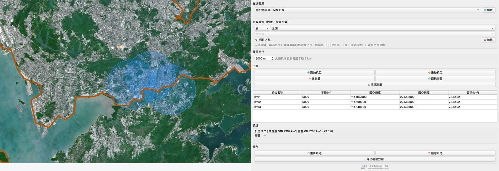
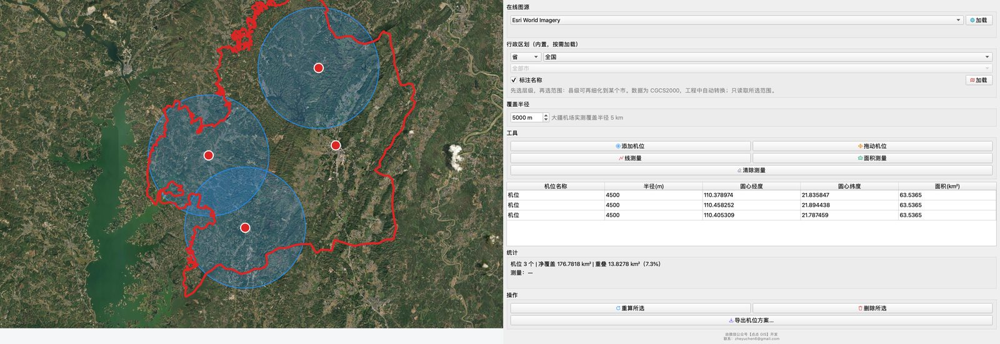
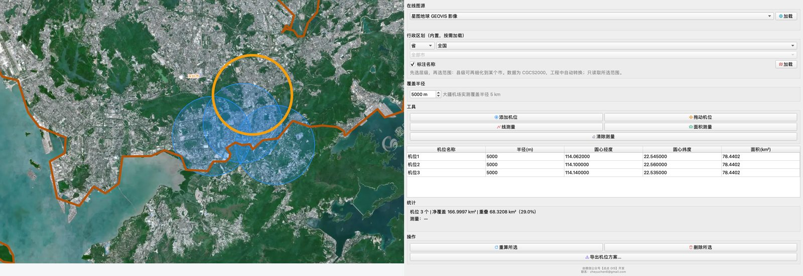
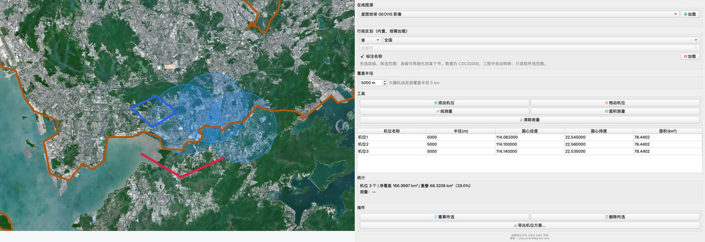

大疆机场（DJI Dock）的覆盖半径，综合考虑续航、航程、任务时间等因素，理论上限是 5 公里；实际选址初筛建议控制在 4–5 km。选址时除了「这一个圆」，还要看它与邻近机位是否重叠、中间是否有覆盖盲区。这个 QGIS 插件可以帮我们把覆盖圆画出来并做这些分析。它跑在 QGIS 平台上，客户发来的 TIF、JPG、SHP、KML 等数据都能直接叠加进来。
点「添加机位」，在地图上点一下，一个半透明的覆盖圆就出现了。插件默认给 5 km（理论参考上限），可按项目情况改成 4–5 km 做初筛。半径在面板里随时可改，改完点「重算所选」，选中的圆按新半径重建。圆与圆之间的重叠关系可以直接看到。

底图内置了 Esri 影像谷歌卫星星图地球四维地球吉林一号天地图。全部为 WGS84，直接叠在覆盖圆下不会错位。
天地图还做了个细节：影像底图和注记是分开的两层，你可以把路名、地名单独叠上去，底下影像完全不动。天地图需要你在面板里填自己的 key（浏览器端免费申请），插件会把 key 存在本机，跨工程、跨重启都有效。

选址总得看边界。插件内置中国省、市、县三级行政区划——34 个省、375 个地级、2890 个县级。不用自己找数据，它会按你当前视窗只加载看得见的部分，图层轻量，画布不卡。

这个插件基于 QGIS 平台的通用能力——客户发来的常见格式可以直接拖进工程，与覆盖圆叠加做对比：
下面是客户发来的KML 边界和机位点直接叠加的效果——红线是客户给的乡镇边界，红点是客户给的备选机位，蓝色覆盖圆按 4.5 km 套上，可据此判断各机位覆盖范围与边界的关系。

调整机位时，面板里这行统计会实时更新：机位数量、净覆盖面积、重叠面积、重叠占比。重叠占比偏高说明机位偏密；中间留有大空档则说明有覆盖盲区。这些数值可作为选址判断的参考。
机位选得不合适？按住直接拖。拖动过程中看到的是橙色预览圈，不会乱改数据；松手才真正落位，中途改主意按 Esc 取消。

顺手还带了线测量和面积测量，量条边、量块地都行。方案定稿后点「导出机位方案」存成 GeoPackage。

半径也别拍脑袋。插件默认给 5 km，这是大疆机场的理论上限；初筛建议用 4–5 km——留出往返航程、作业时间、安全电量和复杂环境的余量。画出来的圆只是直线距离的初筛，最终点位还要叠加地形遮挡、信号环境、航线高度、任务频次复核。
airport_coverage-0.1.6.zip，QGIS 菜单 插件 → 管理并安装插件 → 从 ZIP 安装，勾选启用。要求 QGIS 3.22 以上。